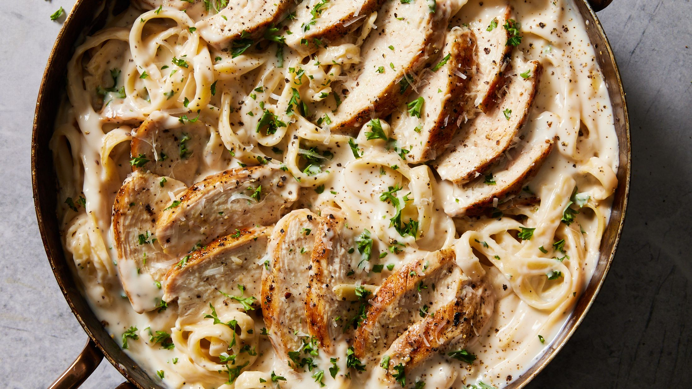

Chicken Alfredo

Recipe Details
A simple, yet delectable recipe of chicken alfredo created to satisfy all tastes. This recipe calls for taking the pasta of your choice, preparing some chicken, then adding whatever sides you desire. Of course, a quality alfredo sauce will also be required for this recipe to reach it's full potential.
Ingredients
- Your preferred Pasta. We reccommend rigatoni or Linguine.
- Your choice of Alfredo Sauce. We reccommend Rao's Alfredo sauce.
- Chicken
- Olive Oil or Avocado Oil
- Cilantro
- Lemon or Lime for flavor
- *optional* Onions
- *optional* when consuming high carbohydrate meals like this we suggest having side salad. This is of course optional!
Directions
- Brine your chicken then dry it.
- Season your chicken with paprika, black pepper, and bullion.
- Take a small or medium sized pan and apply your cooking oil to it.
- Allow the pan to heat for about 2-3 minutes and add your chicken and extras to it.
- Allow the chicken to cook for about 3-5 minutes until you've reached your desired level of crips.
- While your chicken is cooking, bring water to a boil for your pasta.
- Depending on the pasta you selected, allow it to cook in the boiling water for 3 to 10 minutes.
- Within the last 1-2 minutes of cooking the pasta, add a few pinches of salt for flavor.
- Turn off your stove and pour the pasta into a strainer to remove excess water.
- Pour the pasta back into your bowl, then add about a teaspoon of olive oil for flavor.
- Add some black pepper, then add your alfredo sauce and your chicken together.
- Serve the chicken alfredo into small bowls from the pot, adding cilantro on top to each bowl.
- *optional* For each bowl you can prepare a salad that includes greens, tomatoes, shredded carrots, and sweet onion salad dressing.
- Enjoy the masterpiece you just created!
Return to Main